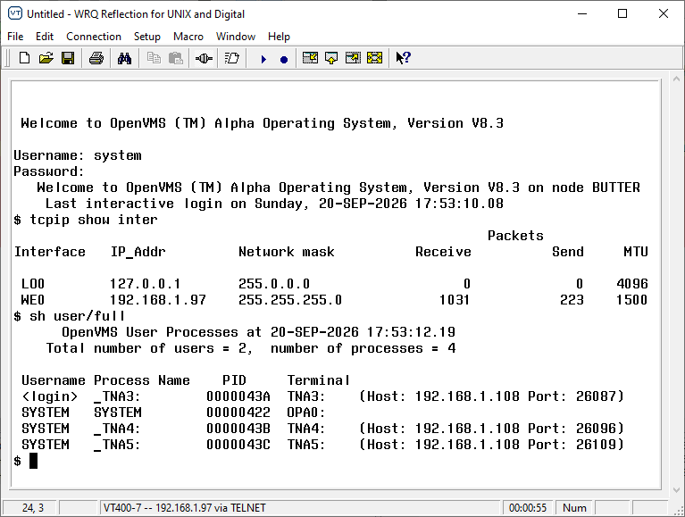
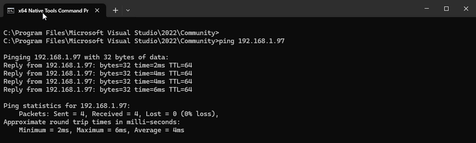
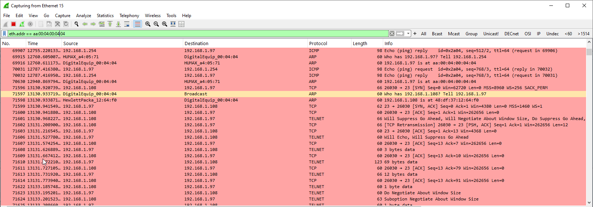

|
<< Click to Display Table of Contents >> Navigation: 8. Appendices - Developer Reference > 8.1 Platform Appendices > Booting/Configure A New OpenVMS Instance from an ISO |
P01>>> B DQA1 -fl 0
=~=~=~=~=~=~=~=~=~=~=~= PuTTY log 2026.09.20 15:52:28 =~=~=~=~=~=~=~=~=~=~=~=
ASA EmulatR -- Alpha AXP (EV6 / 21264) Emulator
Alpha Emulator Console X2.0-15
(c) 2026 Timothy Peer / eNVy Systems, Inc.
*** keyboard not plugged in...
Running on the ISP model.
Flash ROM writes are disabled
4096 Meg of system memory
probing hose 1, PCI
probing hose 0, PCI
probing PCI-to-ISA bridge, bus 1
ERROR: ISA table corrupt!
Initializing table to defaults
type >>>init to use these changes
bus 0, slot 5 -- dqa -- Cypress 82C693 IDE
bus 0, slot 7 -- ewa -- DECchip 21143-AA
bus 0, slot 8 -- pka -- NCR 53C810
*** system serial number not set. use set sys_serial_num command.
initializing GCT/FRU at 3ff32000
Checking dqa1.1.0.105.0 for the option firmware files. . .
Checking dva0.0.0.0.0 for the option firmware files. . .
Option firmware files were not found on CD or floppy.
If you want to load the options firmware,
please enter the device on which the files are located(ewa0),
or just hit <return> to proceed with a standard console update:
***** Loadable Firmware Update Utility *****
------------------------------------------------------------------------------
Function Description
------------------------------------------------------------------------------
Display Displays the system's configuration table.
Exit Done exit LFU (reset).
List Lists the device, revision, firmware name, and update revision.
Readme Lists important release information.
Update Replaces current firmware with loadable data image.
Verify Compares loadable and hardware images.
? or Help Scrolls this function table.
------------------------------------------------------------------------------
UPD> exit
Initializing....
Testing the System
Testing the Memory
memtest: No such command
Testing the Disks (read only)
exer: No such command
System Temperature is 0 degrees C
AlphaServer DS20 14 MHz Console V7.3-2, Feb 27 2007 13:07:36
P00>>>b dqa1
(boot dqa1.1.0.105.0 -flags 0)
block 0 of dqa1.1.0.105.0 is a valid boot block
reading 1226 blocks from dqa1.1.0.105.0
bootstrap code read in
base = 5bc000, image_start = 0, image_bytes = 99400(627712)
initializing HWRPB at 2000
initializing page table at 3ff04000
initializing machine state
setting affinity to the primary CPU
jumping to bootstrap code
OpenVMS (TM) Alpha Operating System, Version V8.3
© Copyright 1976-2006 Hewlett-Packard Development Company, L.P.
Please enter date and time (DD-MMM-YYYY HH:MM) 20-SEP-2026 15:56
Installing required known files...
Configuring devices...
%EWA0, Twisted-Pair mode set by console
%EWA0, Link state: UP
****************************************************************
You can install or upgrade the OpenVMS ALPHA operating system
or you can install or upgrade layered products that are included
on the OpenVMS ALPHA distribution media (CD/DVD).
You can also execute DCL commands and procedures to perform
"standalone" tasks, such as backing up the system disk.
Please choose one of the following:
1) Upgrade, install or reconfigure OpenVMS ALPHA Version V8.3
2) Display layered products that this procedure can install
3) Install or upgrade layered products
4) Show installed products
5) Reconfigure installed products
6) Remove installed products
7) Find, Install or Undo patches; Show or Delete Recovery Data
8) Execute DCL commands and procedures
9) Shut down this system
Enter CHOICE or ? for help: (1/2/3/4/5/6/7/8/9/?) 1
***********************************************************
This procedure will ask a series of questions.
() - encloses acceptable answers
[] - encloses default answers
Type your response and press the <Return> key. Type:
? - to repeat an explanation
^ - to change prior input (not always possible)
Ctrl/Y - to exit the installation procedure
There are two choices for installation/upgrade:
Initialize - Removes all software and data files that were
previously on the target disk and installs OpenVMS ALPHA.
Preserve -- Installs or Upgrades OpenVMS ALPHA on the target disk
and retains all other contents of the target disk.
* Note: You cannot use preserve to install OpenVMS ALPHA on a disk on
which any other operating system is installed. This includes
implementations of OpenVMS for other architectures.
Do you want to INITIALIZE or to PRESERVE? [PRESERVE] initialize
You must enter the device name for the target disk on which
OpenVMS ALPHA will be installed.
Enter device name for target disk: (? for choices) dka200:
Enter volume label for target system disk: [ALPHASYS]
The target system disk can be initialized with On-Disk Structure
Level 2 (ODS-2) or Level 5 (ODS-5). (? for more information)
Do you want to initialize with ODS-2 or ODS-5? (2/5/?) 2
You have chosen to install OpenVMS ALPHA on a new disk.
The target system disk, DKA200:, will be initialized
with structure level 2 (ODS-2).
The disk will be labeled ALPHASYS.
Any data currently on the target system disk will be lost.
Is this OK? (Yes/No) y
Initializing and mounting target....
Creating page and swap files....
You must enter a password for the SYSTEM account.
The password must be a minimum of 8 characters in length, and
may not exceed 31 characters. It will be checked and verified.
The system will not accept passwords that can be guessed easily.
The password will not be displayed as you enter it.
Password for SYSTEM account:*********
Re-enter SYSTEM password for verification: *********
Will this system be a member of an OpenVMS Cluster? (Yes/No) n
Will this system be an instance in an OpenVMS Galaxy? (Yes/No) n
For your system to operate properly, you must set two parameters:
SCSNODE and SCSSYSTEMID.
SCSNODE can be from 1 to 6 letters or numbers. It must contain at
least one letter.
If you plan to use DECnet, SCSNODE must be the DECnet Phase IV
node name, or the DECnet-Plus (Phase V) node synonym.
If you have multiple OpenVMS systems, the SCSNODE on each system
must be unique.
Enter SCSNODE: BUTTER
If you plan to use DECnet, SCSSYSTEMID must be set based on the
DECnet Phase IV address.
Do you plan to use DECnet? (Yes/No) [Yes] y
DECnet Phase IV addresses are in the format
DECnet_area_number.DECnet_node_number
DECnet_area_number is a number between 1 and 63.
DECnet_node_number is a number between 1 and 1023.
If you plan to use DECnet WITHOUT Phase IV compatible addresses,
enter 0.0.
Enter DECnet (Phase IV) Address: [1.1] 1.4
SCSSYSTEMID will be set to 1028.
This was calculated as follows:
(DECnet_area_number * 1024) + DECnet_node_number
Configuring the Local Time Zone
TIME ZONE SPECIFICATION -- MAIN Time Zone Menu "*" indicates a menu
0* GMT
1* AFRICA 17) EST 33) IRAN 49) PORTUGAL
2* AMERICA 18) EST5EDT 34) ISRAEL 50) PRC
3* ANTARCTICA 19* ETC 35) JAMAICA 51) PST8PDT
4* ARCTIC 20* EUROPE 36) JAPAN 52) ROC
5* ASIA 21) FACTORY 37) KWAJALEIN 53) ROK
6* ATLANTIC 22) GB-EIRE 38) LIBYA 54) SINGAPORE
7* AUSTRALIA 23) GB 39) MET 55) TURKEY
8* BRAZIL 24) GMT-0 40* MEXICO 56) UCT
9* CANADA 25) GMT 41* MIDEAST 57) UNIVERSAL
10) CET 26) GMT0 42) MST 58* US
11* CHILE 27) GMTPLUS0 43) MST7MDT 59) UTC
12) CST6CDT 28) GREENWICH 44) NAVAJO 60) W-SU
13) CUBA 29) HONGKONG 45) NZ-CHAT 61) WET
14) EET 30) HST 46) NZ 62) ZULU
15) EGYPT 31) ICELAND 47* PACIFIC
16) EIRE 32* INDIAN 48) POLAND
Press "Return" to redisplay, enter "=" to search or "?" for help, or
Select the number above that best represents the desired time zone: 51
You selected PST8PDT as your time zone.
Is this correct? (Yes/No) [YES]: y
Configuring the Time Differential Factor (TDF)
Default Time Differential Factor for standard time is -8:00.
Default Time Differential Factor for daylight saving time is -7:00.
The Time Differential Factor (TDF) is the difference between your
system time and Coordinated Universal Time (UTC). UTC is similar
in most respects to Greenwich Mean Time (GMT).
The TDF is expressed as hours and minutes, and should be entered
in the hh:mm format. TDFs for the Americas will be negative
(-3:00, -4:00, etc.); TDFs for Europe, Africa, Asia and Australia
will be positive (1:00, 2:00, etc.).
This time zone supports daylight saving time.
Is this time zone currently on daylight saving time? (Yes/No): n
Enter the Time Differential Factor [-8:00]:
NEW SYSTEM TIME DIFFERENTIAL FACTOR = -8:00
Is this correct? [Y]: y
If you have Product Authorization Keys (PAKs) to register,
you can register them now.
Do you want to register any Product Authorization Keys? (Yes/No) [Yes] n
You can install the following products along with the OpenVMS
operating system:
o Availability Manager (base) for OpenVMS Alpha (required part of OpenVMS)
o CDSA for OpenVMS Alpha (required part of OpenVMS)
o KERBEROS for OpenVMS Alpha (required part of OpenVMS)
o SSL for OpenVMS Alpha (required part of OpenVMS)
o Performance Data Collector (base) for OpenVMS Alpha (required part of OpenVMS)
o DECwindows Motif for OpenVMS Alpha
o DECnet-Plus for OpenVMS Alpha
o DECnet Phase IV for OpenVMS Alpha
o HP TCP/IP Services for OpenVMS
If you want to change your selections, you can do so later in the
installation by answering "NO" to the following question:
"Do you want the defaults for all options?"
Do you want to install DECwindows Motif for OpenVMS Alpha V1.6?
(Yes/No) [Yes] y
Beginning with OpenVMS V7.1, the DECnet-Plus kit is provided with
the OpenVMS operating system kit. HP strongly recommends that
DECnet users install DECnet-Plus. DECnet Phase IV applications are
supported by DECnet-Plus.
DECnet Phase IV is also provided as an option.
If you install DECnet-Plus and TCP/IP you can run DECnet
applications over a TCP/IP network. Please see the OpenVMS
Management Guide for information on running DECnet over TCP/IP.
Do you want to install DECnet-Plus for OpenVMS Alpha V8.3?
(Yes/No) [Yes]
Do you want to install HP TCP/IP Services for OpenVMS V5.6-9?
(Yes/No) [Yes] y
The installation operation can provide brief or detailed descriptions.
In either case, you can request the detailed descriptions by typing ?.
Do you always want detailed descriptions? (Yes/No) [No] n
Performing product kit validation ...
The following product has been selected:
DEC AXPVMS OPENVMS V8.3 Platform (product suite)
Configuration phase starting ...
You will be asked to choose options, if any, for each selected product and for
any products that may be installed to satisfy software dependency requirements.
DEC AXPVMS OPENVMS V8.3: OPENVMS and related products Platform
COPYRIGHT 1976, 24-JUL-2006
Hewlett-Packard Development Company, L.P.
Do you want the defaults for all options? [YES]
Availability Manager (base) for OpenVMS Alpha (required part of OpenVMS)
CDSA for OpenVMS Alpha (required part of OpenVMS)
KERBEROS for OpenVMS Alpha (required part of OpenVMS)
SSL for OpenVMS Alpha (required part of OpenVMS)
Performance Data Collector (base) for OpenVMS Alpha (required part of OpenVMS)
Do you want to review the options? [NO]
Execution phase starting ...
The following products will be installed to destinations:
CPQ AXPVMS CDSA V2.2-271 DISK$ALPHASYS:[VMS$COMMON.]
DEC AXPVMS DECNET_OSI V8.3 DISK$ALPHASYS:[VMS$COMMON.]
DEC AXPVMS DWMOTIF_SUPPORT V8.3 DISK$ALPHASYS:[VMS$COMMON.]
DEC AXPVMS OPENVMS V8.3 DISK$ALPHASYS:[VMS$COMMON.]
DEC AXPVMS TCPIP V5.6-9 DISK$ALPHASYS:[VMS$COMMON.]
DEC AXPVMS VMS V8.3 DISK$ALPHASYS:[VMS$COMMON.]
HP AXPVMS AVAIL_MAN_BASE V8.3 DISK$ALPHASYS:[VMS$COMMON.]
HP AXPVMS KERBEROS V3.0-103 DISK$ALPHASYS:[VMS$COMMON.]
HP AXPVMS SSL V1.3-281 DISK$ALPHASYS:[VMS$COMMON.]
HP AXPVMS TDC_RT V2.2-107 DISK$ALPHASYS:[VMS$COMMON.]
Portion done: 0%...10%...20%...30%...40%...50%...60%...70%...80%...90%
%PCSI-I-PRCOUTPUT, output from subprocess follows ...
% - Execute SYS$MANAGER:TCPIP$CONFIG.COM to proceed with configuration of
% HP TCP/IP Services for OpenVMS.
%
Portion done: 100%
The following products have been installed:
CPQ AXPVMS CDSA V2.2-271 Layered Product
DEC AXPVMS DECNET_OSI V8.3 Layered Product
DEC AXPVMS DWMOTIF_SUPPORT V8.3 Layered Product
DEC AXPVMS OPENVMS V8.3 Platform (product suite)
DEC AXPVMS TCPIP V5.6-9 Layered Product
DEC AXPVMS VMS V8.3 Operating System
HP AXPVMS AVAIL_MAN_BASE V8.3 Layered Product
HP AXPVMS KERBEROS V3.0-103 Layered Product
HP AXPVMS SSL V1.3-281 Layered Product
HP AXPVMS TDC_RT V2.2-107 Layered Product
DEC AXPVMS OPENVMS V8.3: OPENVMS and related products Platform
HP AXPVMS KERBEROS V3.0-103
Configure and set up Kerberos
If Kerberos will be run on this system, but has not been
used previously, you need to perform the following steps.
o Run the Kerberos configuration procedure:
@SYS$STARTUP:KRB$CONFIGURE.COM
o Add the following line to SYS$MANAGER:SYSTARTUP_VMS.COM:
$ @SYS$STARTUP:KRB$STARTUP
o Add the following line to SYS$MANAGER:SYLOGIN.COM:
$ @SYS$MANAGER:KRB$SYMBOLS
Press RETURN to continue: I am not sure wh
HP AXPVMS SSL V1.3-281: SSL for OpenVMS Alpha V1.3 (Based on OpenSSL 0.9.7e)
There are post installation tasks that you must complete
after upgrading from previous SSL versions
including verifying startup command procedures and logical names.
Refer to SYS$HELP:SSL013.RELEASE_NOTES for more information.
HP AXPVMS TDC_RT V2.2-107: The Performance Data Collector (base) for OpenVMS
Users of this product require the following privileges:
(CMKRNL,LOG_IO,WORLD,PHY_IO,SYSPRV,SYSLCK)
Users of this product require the following process resource limits:
WSQUO minimum 6000
A read-me file is available in SYS$COMMON:[TDC]TDC_README.TXT
Release notes are available in SYS$COMMON:[TDC]TDC_RELEASE_NOTES.TXT
DEC AXPVMS TCPIP V5.6-9: HP TCP/IP Services for OpenVMS.
Check the release notes for current status of the product.
The installation is now complete.
When the newly installed system is first booted, a special
startup procedure will be run. This procedure will:
o Configure the system for standalone or OpenVMS Cluster operation.
o Run AUTOGEN to set system parameters.
o Reboot the system with the newly set parameters.
You may shut down now or continue with other operations.
Process AXPVMS_INSTALL logged out at 20-SEP-2026 15:59:37.58
Press Return to continue...
****************************************************************
You can install or upgrade the OpenVMS ALPHA operating system
or you can install or upgrade layered products that are included
on the OpenVMS ALPHA distribution media (CD/DVD).
You can also execute DCL commands and procedures to perform
"standalone" tasks, such as backing up the system disk.
Please choose one of the following:
1) Upgrade, install or reconfigure OpenVMS ALPHA Version V8.3
2) Display layered products that this procedure can install
3) Install or upgrade layered products
4) Show installed products
5) Reconfigure installed products
6) Remove installed products
7) Find, Install or Undo patches; Show or Delete Recovery Data
8) Execute DCL commands and procedures
9) Shut down this system
Enter CHOICE or ? for help: (1/2/3/4/5/6/7/8/9/?) 9
Shutting down the system
SYSTEM SHUTDOWN COMPLETE
=~=~=~=~=~=~=~=~=~=~=~= PuTTY log 2026.09.20 17:40:07 =~=~=~=~=~=~=~=~=~=~=~=
ASA EmulatR -- Alpha AXP (EV6 / 21264) Emulator
Alpha Emulator Console X2.0-15
(c) 2026 Timothy Peer / eNVy Systems, Inc.
*** keyboard not plugged in...
Running on the ISP model.
Flash ROM writes are disabled
4096 Meg of system memory
probing hose 1, PCI
probing hose 0, PCI
probing PCI-to-ISA bridge, bus 1
bus 0, slot 5 -- dqa -- Cypress 82C693 IDE
bus 0, slot 7 -- ewa -- DECchip 21143-AA
bus 0, slot 8 -- pka -- NCR 53C810
*** system serial number not set. use set sys_serial_num command.
initializing GCT/FRU at 3ff32000
Checking dqa1.1.0.105.0 for the option firmware files. . .
Checking dva0.0.0.0.0 for the option firmware files. . .
Option firmware files were not found on CD or floppy.
If you want to load the options firmware,
please enter the device on which the files are located(ewa0),
or just hit <return> to proceed with a standard console update:
***** Loadable Firmware Update Utility *****
------------------------------------------------------------------------------
Function Description
------------------------------------------------------------------------------
Display Displays the system's configuration table.
Exit Done exit LFU (reset).
List Lists the device, revision, firmware name, and update revision.
Readme Lists important release information.
Update Replaces current firmware with loadable data image.
Verify Compares loadable and hardware images.
? or Help Scrolls this function table.
------------------------------------------------------------------------------
UPD> exit
Initializing....
Testing the System
Testing the Memory
memtest: No such command
Testing the Disks (read only)
exer: No such command
System Temperature is 0 degrees C
AlphaServer DS20 ~22 MHz Console V7.3-2, Feb 27 2007 13:07:36
P00>>>b dka200
(boot dka200.2.0.8.0 -flags 0)
block 0 of dka200.2.0.8.0 is a valid boot block
reading 1226 blocks from dka200.2.0.8.0
bootstrap code read in
base = 5bc000, image_start = 0, image_bytes = 99400(627712)
initializing HWRPB at 2000
initializing page table at 3ff04000
initializing machine state
setting affinity to the primary CPU
jumping to bootstrap code
OpenVMS (TM) Alpha Operating System, Version V8.3
© Copyright 1976-2006 Hewlett-Packard Development Company, L.P.
%DECnet-I-LOADED, network base image loaded, version = 05.13.00
%DECnet-W-NOOPEN, could not open SYS$SYSROOT:[SYSEXE]NET$CONFIG.DAT
Please enter date and time (DD-MMM-YYYY HH:MM) 20-SEP-2026 17:49
Installing required known files...
Configuring devices...
%RUN-S-PROC_ID, identification of created process is 00000024
%%%%%%%%%%% OPCOM 20-SEP-2026 17:49:11.60 %%%%%%%%%%%
Operator _BUTTER$OPA0: has been enabled, username SYSTEM
%%%%%%%%%%% OPCOM 20-SEP-2026 17:49:11.60 %%%%%%%%%%%
Operator status for operator _BUTTER$OPA0:
CENTRAL, PRINTER, TAPES, DISKS, DEVICES, CARDS, NETWORK, CLUSTER, SECURITY,
LICENSE, OPER1, OPER2, OPER3, OPER4, OPER5, OPER6, OPER7, OPER8, OPER9, OPER10,
OPER11, OPER12
%%%%%%%%%%% OPCOM 20-SEP-2026 17:49:11.61 %%%%%%%%%%%
Logfile has been initialized by operator _BUTTER$OPA0:
Logfile is BUTTER::SYS$SYSROOT:[SYSMGR]OPERATOR.LOG;1
%%%%%%%%%%% OPCOM 20-SEP-2026 17:49:11.61 %%%%%%%%%%%
Operator status for operator BUTTER::SYS$SYSROOT:[SYSMGR]OPERATOR.LOG;1
CENTRAL, PRINTER, TAPES, DISKS, DEVICES, CARDS, NETWORK, CLUSTER, SECURITY,
LICENSE, OPER1, OPER2, OPER3, OPER4, OPER5, OPER6, OPER7, OPER8, OPER9, OPER10,
OPER11, OPER12
%SYSTEM-I-BOOTUPGRADE, security auditing disabled
%%%%%%%%%%% OPCOM 20-SEP-2026 17:49:11.72 %%%%%%%%%%%
Message from user SYSTEM on BUTTER
%JBC-E-OPENERR, error opening SYS$COMMON:[SYSEXE]QMAN$MASTER.DAT;
%%%%%%%%%%% OPCOM 20-SEP-2026 17:49:11.72 %%%%%%%%%%%
Message from user SYSTEM on BUTTER
-RMS-E-FNF, file not found
%LICENSE-F-EMTLDB, license database contains no license records
%SYSTEM-I-BOOTUPGRADE, security server not started
%SYSTEM-I-BOOTUPGRADE, ACME server not started
NET$STARTUP, Network not started due to UPGRADE boot
%SYSTEM-W-NOSUCHDEV, no such device available
%%%%%%%%%%% OPCOM 20-SEP-2026 17:49:12.74 %%%%%%%%%%%
Message from user SYSTEM on BUTTER
%LICENSE-E-NOAUTH, DEC OPENVMS-ALPHA use is not authorized on this node
-LICENSE-F-NOLICENSE, no license is active for this software product
-LICENSE-I-SYSMGR, please see your system manager
%LICENSE-E-NOAUTH, DEC OPENVMS-ALPHA use is not authorized on this node
-LICENSE-F-NOLICENSE, no license is active for this software product
-LICENSE-I-SYSMGR, please see your system manager
Startup processing continuing...
%SYSTEM-I-BOOTUPGRADE, Coordinated Startup not performed
%EWA0, Twisted-Pair mode set by console
%EWA0, Link state: UP
CDSA-I-Init, Re-initializing CDSA.
CDSA-I-Init, Initializing CDSA
MDS installed successfully.
Module installed successfully.
Module installed successfully.
Module installed successfully.
Module installed successfully.
Module installed successfully.
Module installed successfully.
Module installed successfully.
Module installed successfully.
Module installed successfully.
Module installed successfully.
Module installed successfully.
CDSA-I-Init, CDSA Initialization complete
CDSA-I-Init, Initializing Secure Delivery
Install completed successfully.
Install completed successfully.
Module installed successfully.
Module installed successfully.
CDSA-I-Init, Secure Delivery Initialization complete
AUTOGEN will now be run to compute the new system parameters. The system
will then shut down and reboot, and the installation or upgrade will be
complete.
After rebooting you can continue with such system management tasks as:
Decompressing System Libraries (not necessary on OpenVMS I64)
Configuring networking software (TCP/IP Services, DECnet, other)
Using SYS$MANAGER:CLUSTER_CONFIG.COM to create an OpenVMS Cluster
Creating FIELD, SYSTEST and SYSTEST_CLIG accounts if needed
%AUTOGEN-I-BEGIN, GETDATA phase is beginning.
%AUTOGEN-I-NEWFILE, Previous contents of SYS$SYSTEM:CLU$PARAMS.DAT have
been copied to SYS$SYSTEM:CLU$PARAMS.OLD. You may wish to purge
SYS$SYSTEM:CLU$PARAMS.OLD.
%AUTOGEN-I-NEWFILE, Previous contents of SYS$SYSTEM:CLU$PARAMS.DAT have
been copied to SYS$SYSTEM:CLU$PARAMS.OLD. You may wish to purge
SYS$SYSTEM:CLU$PARAMS.OLD.
%AUTOGEN-I-NEWFILE, A new version of SYS$SYSTEM:PARAMS.DAT has been created.
You may wish to purge this file.
%AUTOGEN-I-END, GETDATA phase has successfully completed.
%AUTOGEN-I-BEGIN, GENPARAMS phase is beginning.
%AUTOGEN-I-NEWFILE, A new version of SYS$MANAGER:VMSIMAGES.DAT has been created.
You may wish to purge this file.
%SYSTEM-W-NOSUCHDEV, no such device available
%AUTOGEN-I-NEWFILE, A new version of SYS$SYSTEM:SETPARAMS.DAT has been created.
You may wish to purge this file.
%AUTOGEN-I-END, GENPARAMS phase has successfully completed.
%AUTOGEN-I-BEGIN, GENFILES phase is beginning.
%SYSGEN-I-CREATED, SYS$SYSROOT:[SYSEXE]SYS$ERRLOG.DMP;2 created
%SYSGEN-I-EXTENDED, SYS$SYSROOT:[SYSEXE]PAGEFILE.SYS;1 extended
%SYSGEN-I-EXTENDED, SYS$SYSROOT:[SYSEXE]PAGEFILE.SYS;1 extended
%SYSGEN-I-CREATED, SYS$SYSROOT:[SYSEXE]SYSDUMP.DMP;1 created
%SYSGEN-I-EXTENDED, SYS$SYSROOT:[SYSEXE]SYSDUMP.DMP;1 extended
******************
%AUTOGEN-W-REPORT, Warnings were detected by AUTOGEN. Please review the
information given in the file SYS$SYSTEM:AGEN$PARAMS.REPORT
******************
%AUTOGEN-I-REPORT, AUTOGEN has produced some informational messages which
have been stored in the file SYS$SYSTEM:AGEN$PARAMS.REPORT. You may
wish to review the information in that file.
%AUTOGEN-I-END, GENFILES phase has successfully completed.
%AUTOGEN-I-BEGIN, SETPARAMS phase is beginning.
%%%%%%%%%%% OPCOM 20-SEP-2026 17:50:05.60 %%%%%%%%%%%
Message from user SYSTEM on BUTTER
%SYSGEN-I-WRITECUR, CURRENT system parameters modified by process ID 00000023 in
to file SYS$SYSROOT:[SYSEXE]ALPHAVMSSYS.PAR;2
%AUTOGEN-I-SYSGEN, parameters modified
%AUTOGEN-I-END, SETPARAMS phase has successfully completed.
%AUTOGEN-I-BEGIN, REBOOT phase is beginning.
The system is shutting down to allow the system to boot with the
generated site-specific parameters and installed images.
The system will automatically reboot after the shutdown and the
upgrade will be complete.
SHUTDOWN -- Perform an Orderly System Shutdown
on node BUTTER
%SHUTDOWN-I-BOOTCHECK, performing reboot consistency check...
%SHUTDOWN-I-CHECKOK, basic reboot consistency check completed
%SHUTDOWN-I-OPERATOR, this terminal is now an operator's console
%SHUTDOWN-I-DISLOGINS, interactive logins will now be disabled
%SET-I-INTSET, login interactive limit = 0, current interactive value = 0
%SHUTDOWN-I-STOPQUEUES, the queues on this node will now be stopped
%%%%%%%%%%% OPCOM 20-SEP-2026 17:50:06.10 %%%%%%%%%%%
Message from user SYSTEM on BUTTER
%JBC-E-OPENERR, error opening SYS$COMMON:[SYSEXE]QMAN$MASTER.DAT;
%%%%%%%%%%% OPCOM 20-SEP-2026 17:50:06.10 %%%%%%%%%%%
Message from user SYSTEM on BUTTER
-RMS-E-FNF, file not found
SHUTDOWN message on BUTTER from user SYSTEM at BUTTER Batch 17:50:06
BUTTER will shut down in 0 minutes; back up soon. Please log off node BUTTER.
Reboot system with AUTOGENerated parameters
%SHUTDOWN-I-STOPUSER, all user processes will now be stopped
%SHUTDOWN-I-REMOVE, all installed images will now be removed
%SHUTDOWN-I-DISMOUNT, all volumes will now be dismounted
%%%%%%%%%%% OPCOM 20-SEP-2026 17:50:06.62 %%%%%%%%%%%
Message from user SYSTEM on BUTTER
STARTUP, BUTTER shutdown was requested by the operator.
=~=~=~=~=~=~=~=~=~=~=~= PuTTY log 2026.09.20 18:15:57 =~=~=~=~=~=~=~=~=~=~=~=
ASA EmulatR -- Alpha AXP (EV6 / 21264) Emulator
Alpha Emulator Console X2.0-15
(c) 2026 Timothy Peer / eNVy Systems, Inc.
*** keyboard not plugged in...
Running on the ISP model.
Flash ROM writes are disabled
4096 Meg of system memory
probing hose 1, PCI
probing hose 0, PCI
probing PCI-to-ISA bridge, bus 1
bus 0, slot 5 -- dqa -- Cypress 82C693 IDE
bus 0, slot 7 -- ewa -- DECchip 21143-AA
bus 0, slot 8 -- pka -- NCR 53C810
*** system serial number not set. use set sys_serial_num command.
initializing GCT/FRU at 3ff32000
Checking dqa1.1.0.105.0 for the option firmware files. . .
Checking dva0.0.0.0.0 for the option firmware files. . .
Option firmware files were not found on CD or floppy.
If you want to load the options firmware,
please enter the device on which the files are located(ewa0),
or just hit <return> to proceed with a standard console update:
***** Loadable Firmware Update Utility *****
------------------------------------------------------------------------------
Function Description
------------------------------------------------------------------------------
Display Displays the system's configuration table.
Exit Done exit LFU (reset).
List Lists the device, revision, firmware name, and update revision.
Readme Lists important release information.
Update Replaces current firmware with loadable data image.
Verify Compares loadable and hardware images.
? or Help Scrolls this function table.
------------------------------------------------------------------------------
UPD> exit
Initializing....
Testing the System
Testing the Memory
memtest: No such command
Testing the Disks (read only)
exer: No such command
System Temperature is 0 degrees C
AlphaServer DS20 ~45 MHz Console V7.3-2, Feb 27 2007 13:07:36
P00>>>b dka200
(boot dka200.2.0.8.0 -flags 0)
block 0 of dka200.2.0.8.0 is a valid boot block
reading 1226 blocks from dka200.2.0.8.0
bootstrap code read in
base = 5bc000, image_start = 0, image_bytes = 99400(627712)
initializing HWRPB at 2000
initializing page table at 3ff04000
initializing machine state
setting affinity to the primary CPU
jumping to bootstrap code
OpenVMS (TM) Alpha Operating System, Version V8.3
© Copyright 1976-2006 Hewlett-Packard Development Company, L.P.
%DECnet-I-LOADED, network base image loaded, version = 05.13.00
%DECnet-W-NOOPEN, could not open SYS$SYSROOT:[SYSEXE]NET$CONFIG.DAT
%STDRV-I-STARTUP, OpenVMS startup begun at 20-SEP-2026 17:50:18.13
%EWA0, Twisted-Pair mode set by console
%EWA0, Link state: UP
%RUN-S-PROC_ID, identification of created process is 00000404
%RUN-S-PROC_ID, identification of created process is 00000405
%%%%%%%%%%% OPCOM 20-SEP-2026 17:50:36.89 %%%%%%%%%%%
Operator _BUTTER$OPA0: has been enabled, username SYSTEM
%%%%%%%%%%% OPCOM 20-SEP-2026 17:50:36.89 %%%%%%%%%%%
Operator status for operator _BUTTER$OPA0:
CENTRAL, PRINTER, TAPES, DISKS, DEVICES, CARDS, NETWORK, CLUSTER, SECURITY,
LICENSE, OPER1, OPER2, OPER3, OPER4, OPER5, OPER6, OPER7, OPER8, OPER9, OPER10,
OPER11, OPER12
%%%%%%%%%%% OPCOM 20-SEP-2026 17:50:36.89 %%%%%%%%%%%
Logfile has been initialized by operator _BUTTER$OPA0:
Logfile is BUTTER::SYS$SYSROOT:[SYSMGR]OPERATOR.LOG;2
%%%%%%%%%%% OPCOM 20-SEP-2026 17:50:36.89 %%%%%%%%%%%
Operator status for operator BUTTER::SYS$SYSROOT:[SYSMGR]OPERATOR.LOG;2
CENTRAL, PRINTER, TAPES, DISKS, DEVICES, CARDS, NETWORK, CLUSTER, SECURITY,
LICENSE, OPER1, OPER2, OPER3, OPER4, OPER5, OPER6, OPER7, OPER8, OPER9, OPER10,
OPER11, OPER12
%%%%%%%%%%% OPCOM 20-SEP-2026 17:50:37.00 %%%%%%%%%%%
Message from user AUDIT$SERVER on BUTTER
%AUDSRV-I-NEWSERVERDB, new audit server database created ( PC 0003FEA8)
%%%%%%%%%%% OPCOM 20-SEP-2026 17:50:37.05 %%%%%%%%%%%
Message from user AUDIT$SERVER on BUTTER
%AUDSRV-I-REMENABLED, resource monitoring enabled for journal SECURITY
%%%%%%%%%%% OPCOM 20-SEP-2026 17:50:37.05 %%%%%%%%%%%
Message from user AUDIT$SERVER on BUTTER
%AUDSRV-I-NEWOBJECTDB, new object database created ( PC 00043B58)
%SET-I-NEWAUDSRV, identification of new audit server process is 0000040A
%%%%%%%%%%% OPCOM 20-SEP-2026 17:50:37.11 %%%%%%%%%%%
Message from user SYSTEM on BUTTER
%JBC-E-OPENERR, error opening SYS$COMMON:[SYSEXE]QMAN$MASTER.DAT;
%%%%%%%%%%% OPCOM 20-SEP-2026 17:50:37.11 %%%%%%%%%%%
Message from user SYSTEM on BUTTER
-RMS-E-FNF, file not found
%LICENSE-F-EMTLDB, license database contains no license records
%%%%%%%%%%% OPCOM 20-SEP-2026 17:50:37.67 %%%%%%%%%%%
Message from user SYSTEM on BUTTER
%SECSRV-E-NOPROXYDB, cannot find proxy database file NET$PROXY.DAT
%RMS-E-FNF, file not found
%%%%%%%%%%% OPCOM 20-SEP-2026 17:50:37.67 %%%%%%%%%%%
Message from user SYSTEM on BUTTER
%SECSRV-E-NOPROXYDB, cannot find proxy database file NET$PROXY.DAT
%RMS-E-FNF, file not found
%%%%%%%%%%% OPCOM 20-SEP-2026 17:50:37.67 %%%%%%%%%%%
Message from user SYSTEM on BUTTER
%SECSRV-I-CIACRECLUDB, security server created cluster intrusion database
%%%%%%%%%%% OPCOM 20-SEP-2026 17:50:37.67 %%%%%%%%%%%
Message from user SYSTEM on BUTTER
%SECSRV-I-SERVERSTARTINGU, security server starting up
%%%%%%%%%%% OPCOM 20-SEP-2026 17:50:37.67 %%%%%%%%%%%
Message from user SYSTEM on BUTTER
%SECSRV-I-CIASTARTINGUP, breakin detection and evasion processing now starting up
%%%%%%%%%%% OPCOM 20-SEP-2026 17:50:38.42 %%%%%%%%%%%
Message from user SYSTEM on BUTTER
%ACME-I-SERVERSTART, ACME_SERVER starting
Copyright 2006 Hewlett-Packard Development Company, L.P.
%NET$STARTUP-W-NONETCONFIG, this node has not been configured to run DECnet-Plus
for OpenVMS use SYS$MANAGER:NET$CONFIGURE.COM if you wish to configure DECnet
%NET$STARTUP-I-OPERSTATUS, DECnet-Plus for OpenVMS operational status is OFF
%DECdtm-F-NODECnet, the TP_SERVER process was not started because either:
o DECnet-Plus is not started or is not configured, or
o The SYS$NODE_FULLNAME logical name is not defined
This could be because when you installed DECnet-Plus and were prompted
for the system's full name, you specified a local name instead of a
DECdns or Domain name.
If you want to use DECdtm services, make sure that DECnet-Plus is started and
configured and that SYS$NODE_FULLNAME is defined, then use the following
command to start the TP_SERVER process:
$ @SYS$STARTUP:DECDTM$STARTUP.COM
%%%%%%%%%%% OPCOM 20-SEP-2026 17:50:39.17 %%%%%%%%%%%
Message from user SYSTEM on BUTTER
%LICENSE-E-NOAUTH, DEC OPENVMS-ALPHA use is not authorized on this node
-LICENSE-F-NOLICENSE, no license is active for this software product
-LICENSE-I-SYSMGR, please see your system manager
%LICENSE-E-NOAUTH, DEC OPENVMS-ALPHA use is not authorized on this node
-LICENSE-F-NOLICENSE, no license is active for this software product
-LICENSE-I-SYSMGR, please see your system manager
Startup processing continuing...
%%%%%%%%%%% OPCOM 20-SEP-2026 17:50:39.32 %%%%%%%%%%%
Message from user AUDIT$SERVER on BUTTER
Security alarm (SECURITY) and security audit (SECURITY) on BUTTER, system id: 10
28
Auditable event: Audit server starting up
Event time: 20-SEP-2026 17:50:39.30
PID: 00000403
Username: SYSTEM
%STARTUP-I-AUDITCONTINUE, audit server initialization complete
The OpenVMS system is now executing the site-specific startup commands.
%%%%%%%%%%% OPCOM 20-SEP-2026 17:50:39.76 %%%%%%%%%%%
Message from user AUDIT$SERVER on BUTTER
Security alarm (SECURITY) and security audit (SECURITY) on BUTTER, system id: 1028
Auditable event: Identifier added
Event time: 20-SEP-2026 17:50:39.76
PID: 00000403
Process name: STARTUP
Username: SYSTEM
Process owner: [SYSTEM]
Image name: BUTTER$DKA200:[SYS0.SYSCOMMON.][SYSEXE]AUTHORIZE.EXE
Identifier name: SYS$NODE_BUTTER
Identifier value: %X80010000
Attributes: none
Posix UID: -2
Posix GID: -2 (%XFFFFFFFE)
%UAF-I-RDBADDMSG, identifier SYS$NODE_BUTTER value %X80010000 added to rights database
%%%%%%%%%%% OPCOM 20-SEP-2026 17:50:39.85 %%%%%%%%%%%
Message from user AUDIT$SERVER on BUTTER
Security alarm (SECURITY) and security audit (SECURITY) on BUTTER, system id: 1028
Auditable event: Identifier added
Event time: 20-SEP-2026 17:50:39.85
PID: 00000403
Process name: STARTUP
Username: SYSTEM
Process owner: [SYSTEM]
Image name: BUTTER$DKA200:[SYS0.SYSCOMMON.][SYSEXE]AUTHORIZE.EXE
Identifier name: DECW$WS_QUOTA
Identifier value: %X80010001
Attributes: none
Posix UID: -2
Posix GID: -2 (%XFFFFFFFE)
%UAF-I-RDBADDMSG, identifier DECW$WS_QUOTA value %X80010001 added to rights database
%%%%%%%%%%% OPCOM 20-SEP-2026 17:50:39.88 %%%%%%%%%%%
Message from user AUDIT$SERVER on BUTTER
Security alarm (SECURITY) and security audit (SECURITY) on BUTTER, system id: 1028
Auditable event: Identifier added
Event time: 20-SEP-2026 17:50:39.88
PID: 00000403
Process name: STARTUP
Username: SYSTEM
Process owner: [SYSTEM]
Image name: BUTTER$DKA200:[SYS0.SYSCOMMON.][SYSEXE]IMGDMP_RIGHTS.EXE;1
Identifier name: IMGDMP$READALL
Identifier value: %X90390001
Attributes: none
Posix UID: -2
Posix GID: -2 (%XFFFFFFFE)
%PROCDUMP-I-CREATED, rights identifier IMGDMP$READALL successfully created
%%%%%%%%%%% OPCOM 20-SEP-2026 17:50:39.89 %%%%%%%%%%%
Message from user AUDIT$SERVER on BUTTER
Security alarm (SECURITY) and security audit (SECURITY) on BUTTER, system id: 1028
Auditable event: Identifier added
Event time: 20-SEP-2026 17:50:39.89
PID: 00000403
Process name: STARTUP
Username: SYSTEM
Process owner: [SYSTEM]
Image name: BUTTER$DKA200:[SYS0.SYSCOMMON.][SYSEXE]IMGDMP_RIGHTS.EXE;1
Identifier name: IMGDMP$PROTECT
Identifier value: %X90390002
Attributes: RESOURCE
Posix UID: -2
Posix GID: -2 (%XFFFFFFFE)
%PROCDUMP-I-CREATED, rights identifier IMGDMP$PROTECT successfully created
%SET-I-INTSET, login interactive limit = 64, current interactive value = 0
%%%%%%%%%%% OPCOM 20-SEP-2026 17:50:40.09 %%%%%%%%%%%
Message from user SYSTEM on BUTTER
%SMHANDLER-S-STARTUP, server management event handler startup
%RUN-S-PROC_ID, identification of created process is 00000413
SYSTEM job terminated at 20-SEP-2026 17:50:40.13
Accounting information:
Buffered I/O count: 3796 Peak working set size: 7696
Direct I/O count: 1715 Peak virtual size: 186112
Page faults: 4416 Mounted volumes: 0
Charged CPU time: 0 00:00:05.06 Elapsed time: 0 00:00:22.08
Welcome to OpenVMS (TM) Alpha Operating System, Version V8.3
Username: System
Password: ******
%LICENSE-I-NOLICENSE, no license is active for this software product
%LOGIN-S-LOGOPRCON, login allowed from OPA0:
Welcome to OpenVMS (TM) Alpha Operating System, Version V8.3
$ ! licenses loaded
$ @net$configure
Copyright 2006 Hewlett-Packard Development Company, L.P.
DECnet-Plus for OpenVMS network configuration procedure
This procedure will help you create or modify the management scripts
needed to operate DECnet on this machine. You may receive help about
most questions by answering with a question mark '?'.
%NET$CONFIGURE-I-SETUPNEW, setting up for new configuration
You have the option of choosing the following directory services for
your system:
Local file (LOCAL) - A local namespace that uses flat naming.
DECdns - A distributed namespace.
Domain - A naming service that uses DNS/BIND.
The Local file has the capability to hold 100,000 nodes, and it can even
scale beyond that number. The actual number of nodes that the Local file
can hold depends on the space available on your system.
If you choose to enter more than one directory service for your system,
the ordering of this list is *very important*, as the first directory
service entered in this list will be considered the primary directory
service to use on the system. The primary directory service is considered
the first choice to use when looking up naming information for the system.
Enter an *ordered* list of the directory services you want to use on
the system. If you enter more than one directory service, separate them
by commas.
* Enter the directory services to use on the system [DECdns,Local,Domain] : LOCAL
Enter a node name for each directory service chosen.
For the directory service Domain, you will enter a fully qualified
host name for DNS/BIND. The fully qualified host name includes the
host name part and the domain name part. For example:
Domain - mine.xyz.com
For the directory services DECdns and Local file, you will enter a node
full name. The node full name is the name of your system's node object
in the directory service. It includes the namespace nickname, and the
full list of directories leading to the node object name. Examples of
node full names for the directory services DECdns and Local file include:
Local file - LOCAL:.mine
DECdns - XYZ_CORP:.usa.west_coast.mine
For the Local file, the namespace nickname LOCAL is prepended to the
full name and is terminated with a colon (:). The namespace nickname
"LOCAL" means that the Local file is used. The node object name must
begin with a dot (.), and no element of the name (namespace name,
directory, or node object name) can be a null string. Please note that
the namespace nickname "LOCAL" is reserved, and indicates that the
Local file will be used on this system.
The Local file has the capability to hold 100,000 nodes, and it can even
scale beyond that number. The actual number of nodes that the Local file
can hold depends on the space available on your system.
* Enter the full name for directory service LOCAL : LOCAL:.BUTTER
The node synonym is an alphanumeric character string between 1 and 6
characters long that contains at least one alphabetic character. If this
system had previously been running DECnet Phase IV software, then the old
nodename should be used as the synonym. If this system is joining a DECnet
network for the first time, any name can be used for the synonym, as long
as it meets the criteria listed above, and is unique within the network.
* What is the synonym name for this node? [BUTTER] :
* What type of node (Endnode or Router)? [ENDNODE] :
A DECnet-Plus system may or may not use a DECnet Phase IV-style node
address. A node address of 0.0 indicates that this DECnet-Plus system
will be communicating with OSI systems only. If your network contains
some systems running DECnet Phase IV, you may want to specify a compatible
address in order to communicate with them. If your network consists
solely of OSI systems, this is not required.
The DECnet Phase IV node address consists of an area number (between 1
and 63), and a node number within the area (between 1 and 1023).
* Enter PhaseIV Address [1.4] :
%NET$CONFIGURE-I-SCANCONFIG, scanning device configuration - please wait
%NET$CONFIGURE-W-NOPWIP, DECnet over IP requires the PWIP driver to be enabled
%NET$CONFIGURE-W-NODOMAIN, DECnet over IP requires DOMAIN in the directory servi
ces list
%NET$CONFIGURE-I-CREDEFOSITEMPLATE, created default OSI templates
%NET$CONFIGURE-I-EVDDEFAULT, providing default Event Dispatcher configuration
%NET$CONFIGURE-I-MAKEACCOUNT, this procedure creates user account CML$SERVER
%%%%%%%%%%% OPCOM 20-SEP-2026 17:51:34.69 %%%%%%%%%%%
Message from user AUDIT$SERVER on BUTTER
Security alarm (SECURITY) and security audit (SECURITY) on BUTTER, system id: 1028
Auditable event: System UAF record addition
Event time: 20-SEP-2026 17:51:34.68
PID: 00000415
Process name: SYSTEM
Username: SYSTEM
Process owner: [SYSTEM]
Terminal name: OPA0:
Image name: BUTTER$DKA200:[SYS0.SYSCOMMON.][SYSEXE]AUTHORIZE.EXE
Object class name: FILE
Object name: SYS$COMMON:[SYSEXE]SYSUAF.DAT;1
User record: CML$SERVER
Account: New: DECNETV
Original:
Default Device: New: SYS$SPECIFIC:
Original: <none>
Default Directory: New: [CML$SERVER]
Original: [USER]
LGICMD: New: NLA0:
Original: <none>
Owner: New: CML$SERVER Default
Original: <none>
UIC: New: [376,366]
Original: [200,200]
Password Date: New: (pre-expired)
Original: (pre-expired)
Posix UID: -2
Posix GID: -2 (%XFFFFFFFE)
%%%%%%%%%%% OPCOM 20-SEP-2026 17:51:34.69 %%%%%%%%%%%
Message from user AUDIT$SERVER on BUTTER
Security alarm (SECURITY) and security audit (SECURITY) on BUTTER, system id: 1028
Auditable event: Identifier added
Event time: 20-SEP-2026 17:51:34.69
PID: 00000415
Process name: SYSTEM
Username: SYSTEM
Process owner: [SYSTEM]
Terminal name: OPA0:
Image name: BUTTER$DKA200:[SYS0.SYSCOMMON.][SYSEXE]AUTHORIZE.EXE
Identifier name: CML$SERVER
Identifier value: %X00FE00F6
Attributes: none
Posix UID: -2
Posix GID: -2 (%XFFFFFFFE)
%%%%%%%%%%% OPCOM 20-SEP-2026 17:51:34.69 %%%%%%%%%%%
Message from user AUDIT$SERVER on BUTTER
Security alarm (SECURITY) and security audit (SECURITY) on BUTTER, system id: 1028
Auditable event: Identifier added
Event time: 20-SEP-2026 17:51:34.69
PID: 00000415
Process name: SYSTEM
Username: SYSTEM
Process owner: [SYSTEM]
Terminal name: OPA0:
Image name: BUTTER$DKA200:[SYS0.SYSCOMMON.][SYSEXE]AUTHORIZE.EXE
Identifier name: DECNETV
Identifier value: %X00FEFFFF
Attributes: none
Posix UID: -2
Posix GID: -2 (%XFFFFFFFE)
%%%%%%%%%%% OPCOM 20-SEP-2026 17:51:34.73 %%%%%%%%%%%
Message from user AUDIT$SERVER on BUTTER
Security alarm (SECURITY) and security audit (SECURITY) on BUTTER, system id: 1028
Auditable event: System UAF record modification
Event time: 20-SEP-2026 17:51:34.73
PID: 00000415
Process name: SYSTEM
Username: SYSTEM
Process owner: [SYSTEM]
Terminal name: OPA0:
Image name: BUTTER$DKA200:[SYS0.SYSCOMMON.][SYSEXE]AUTHORIZE.EXE
Object class name: FILE
Object name: SYS$COMMON:[SYSEXE]SYSUAF.DAT;1
User record: CML$SERVER
Batch access: New: Primary: (no access), Secondary: (no access)
Original: Primary: (full access), Secondary: (full access)
Default privileges: New: TMPMBX,NETMBX
Original: TMPMBX,NETMBX
Dialup access: New: Primary: (no access), Secondary: (no access)
Original: Primary: (full access), Secondary: (full access)
Flags: New: RESTRICTED
Original: DISUSER
Local access: New: Primary: (no access), Secondary: (no access)
Original: Primary: (full access), Secondary: (full access)
Privileges: New: TMPMBX,NETMBX
Original: TMPMBX,NETMBX
Remote access: New: Primary: (no access), Secondary: (no access)
Original: Primary: (full access), Secondary: (full access)
Posix
*TRUNCATED* -- If audits are enabled for this class, the full message
can be examined with ANALYZE/AUD
%%%%%%%%%%% OPCOM 20-SEP-2026 17:51:34.77 %%%%%%%%%%%
Message from user AUDIT$SERVER on BUTTER
Security alarm (SECURITY) and security audit (SECURITY) on BUTTER, system id: 10
28
Auditable event: Identifier granted
Event time: 20-SEP-2026 17:51:34.77
PID: 00000415
Process name: SYSTEM
Username: SYSTEM
Process owner: [SYSTEM]
Terminal name: OPA0:
Image name: BUTTER$DKA200:[SYS0.SYSCOMMON.][SYSEXE]AUTHORIZE.EXE
Identifier name: NET$EXAMINE
Identifier value: %X91F50001
Attributes: none
Holder name: CML$SERVER
Holder owner: [DECNETV,CML$SERVER]
Posix UID: -2
Posix GID: -2 (%XFFFFFFFE)
%NET$CONFIGURE-I-MAKEACCOUNT, this procedure creates user account MAIL$SERVER
%%%%%%%%%%% OPCOM 20-SEP-2026 17:51:34.89 %%%%%%%%%%%
Message from user AUDIT$SERVER on BUTTER
Security alarm (SECURITY) and security audit (SECURITY) on BUTTER, system id: 1028
Auditable event: System UAF record addition
Event time: 20-SEP-2026 17:51:34.89
PID: 00000415
Process name: SYSTEM
Username: SYSTEM
Process owner: [SYSTEM]
Terminal name: OPA0:
Image name: BUTTER$DKA200:[SYS0.SYSCOMMON.][SYSEXE]AUTHORIZE.EXE
Object class name: FILE
Object name: SYS$COMMON:[SYSEXE]SYSUAF.DAT;1
User record: MAIL$SERVER
Account: New: DECNETV
Original:
Default Device: New: SYS$SPECIFIC:
Original: <none>
Default Directory: New: [MAIL$SERVER]
Original: [USER]
LGICMD: New: NLA0:
Original: <none>
Owner: New: MAIL$SERVER Default
Original: <none>
UIC: New: [376,374]
Original: [200,200]
Password Date: New: (pre-expired)
Original: (pre-expired)
Posix UID: -2
Posix GID: -2 (%XFFFFFFFE)
%%%%%%%%%%% OPCOM 20-SEP-2026 17:51:34.90 %%%%%%%%%%%
Message from user AUDIT$SERVER on BUTTER
Security alarm (SECURITY) and security audit (SECURITY) on BUTTER, system id: 1028
Auditable event: Identifier added
Event time: 20-SEP-2026 17:51:34.90
PID: 00000415
Process name: SYSTEM
Username: SYSTEM
Process owner: [SYSTEM]
Terminal name: OPA0:
Image name: BUTTER$DKA200:[SYS0.SYSCOMMON.][SYSEXE]AUTHORIZE.EXE
Identifier name: MAIL$SERVER
Identifier value: %X00FE00FC
Attributes: none
Posix UID: -2
Posix GID: -2 (%XFFFFFFFE)
%%%%%%%%%%% OPCOM 20-SEP-2026 17:51:34.94 %%%%%%%%%%%
Message from user AUDIT$SERVER on BUTTER
Security alarm (SECURITY) and security audit (SECURITY) on BUTTER, system id: 1028
Auditable event: System UAF record modification
Event time: 20-SEP-2026 17:51:34.94
PID: 00000415
Process name: SYSTEM
Username: SYSTEM
Process owner: [SYSTEM]
Terminal name: OPA0:
Image name: BUTTER$DKA200:[SYS0.SYSCOMMON.][SYSEXE]AUTHORIZE.EXE
Object class name: FILE
Object name: SYS$COMMON:[SYSEXE]SYSUAF.DAT;1
User record: MAIL$SERVER
Batch access: New: Primary: (no access), Secondary: (no access)
Original: Primary: (full access), Secondary: (full access)
Default privileges: New: TMPMBX,NETMBX
Original: TMPMBX,NETMBX
Dialup access: New: Primary: (no access), Secondary: (no access)
Original: Primary: (full access), Secondary: (full access)
Flags: New: RESTRICTED
Original: DISUSER
Local access: New: Primary: (no access), Secondary: (no access)
Original: Primary: (full access), Secondary: (full access)
Privileges: New: TMPMBX,NETMBX
Original: TMPMBX,NETMBX
Remote access: New: Primary: (no access), Secondary: (no access)
Original: Primary: (full access), Secondary: (full access)
Posix
*TRUNCATED* -- If audits are enabled for this class, the full message
can be examined with ANALYZE/AUD
%NET$CONFIGURE-I-MAKEACCOUNT, this procedure creates user account VPM$SERVER
%%%%%%%%%%% OPCOM 20-SEP-2026 17:51:35.09 %%%%%%%%%%%
Message from user AUDIT$SERVER on BUTTER
Security alarm (SECURITY) and security audit (SECURITY) on BUTTER, system id: 1028
Auditable event: System UAF record addition
Event time: 20-SEP-2026 17:51:35.09
PID: 00000415
Process name: SYSTEM
Username: SYSTEM
Process owner: [SYSTEM]
Terminal name: OPA0:
Image name: BUTTER$DKA200:[SYS0.SYSCOMMON.][SYSEXE]AUTHORIZE.EXE
Object class name: FILE
Object name: SYS$COMMON:[SYSEXE]SYSUAF.DAT;1
User record: VPM$SERVER
Account: New: DECNETV
Original:
Default Device: New: SYS$SPECIFIC:
Original: <none>
Default Directory: New: [VPM$SERVER]
Original: [USER]
LGICMD: New: NLA0:
Original: <none>
Owner: New: VPM$SERVER Default
Original: <none>
UIC: New: [376,370]
Original: [200,200]
Password Date: New: (pre-expired)
Original: (pre-expired)
Posix UID: -2
Posix GID: -2 (%XFFFFFFFE)
%%%%%%%%%%% OPCOM 20-SEP-2026 17:51:35.10 %%%%%%%%%%%
Message from user AUDIT$SERVER on BUTTER
Security alarm (SECURITY) and security audit (SECURITY) on BUTTER, system id: 1028
Auditable event: Identifier added
Event time: 20-SEP-2026 17:51:35.09
PID: 00000415
Process name: SYSTEM
Username: SYSTEM
Process owner: [SYSTEM]
Terminal name: OPA0:
Image name: BUTTER$DKA200:[SYS0.SYSCOMMON.][SYSEXE]AUTHORIZE.EXE
Identifier name: VPM$SERVER
Identifier value: %X00FE00F8
Attributes: none
Posix UID: -2
Posix GID: -2 (%XFFFFFFFE)
%%%%%%%%%%% OPCOM 20-SEP-2026 17:51:35.13 %%%%%%%%%%%
Message from user AUDIT$SERVER on BUTTER
Security alarm (SECURITY) and security audit (SECURITY) on BUTTER, system id: 1028
Auditable event: System UAF record modification
Event time: 20-SEP-2026 17:51:35.13
PID: 00000415
Process name: SYSTEM
Username: SYSTEM
Process owner: [SYSTEM]
Terminal name: OPA0:
Image name: BUTTER$DKA200:[SYS0.SYSCOMMON.][SYSEXE]AUTHORIZE.EXE
Object class name: FILE
Object name: SYS$COMMON:[SYSEXE]SYSUAF.DAT;1
User record: VPM$SERVER
Batch access: New: Primary: (no access), Secondary: (no access)
Original: Primary: (full access), Secondary: (full access)
Default privileges: New: TMPMBX,NETMBX
Original: TMPMBX,NETMBX
Dialup access: New: Primary: (no access), Secondary: (no access)
Original: Primary: (full access), Secondary: (full access)
Flags: New: RESTRICTED
Original: DISUSER
Local access: New: Primary: (no access), Secondary: (no access)
Original: Primary: (full access), Secondary: (full acc
ess)
Privileges: New: TMPMBX,NETMBX
Original: TMPMBX,NETMBX
Remote access: New: Primary: (no access), Secondary: (no access)
Original: Primary: (full access), Secondary: (full acc
ess)
Posix
*TRUNCATED* -- If audits are enabled for this class, the full message
can be examined with ANALYZE/AUD
%NET$CONFIGURE-I-MAKEACCOUNT, this procedure creates user account MIRRO$SERVER
%%%%%%%%%%% OPCOM 20-SEP-2026 17:51:35.28 %%%%%%%%%%%
Message from user AUDIT$SERVER on BUTTER
Security alarm (SECURITY) and security audit (SECURITY) on BUTTER, system id: 1028
Auditable event: System UAF record addition
Event time: 20-SEP-2026 17:51:35.28
PID: 00000415
Process name: SYSTEM
Username: SYSTEM
Process owner: [SYSTEM]
Terminal name: OPA0:
Image name: BUTTER$DKA200:[SYS0.SYSCOMMON.][SYSEXE]AUTHORIZE.EXE
Object class name: FILE
Object name: SYS$COMMON:[SYSEXE]SYSUAF.DAT;1
User record: MIRRO$SERVER
Account: New: DECNETV
Original:
Default Device: New: SYS$SPECIFIC:
Original: <none>
Default Directory: New: [MIRRO$SERVER]
Original: [USER]
LGICMD: New: NLA0:
Original: <none>
Owner: New: MIRRO$SERVER Default
Original: <none>
UIC: New: [376,367]
Original: [200,200]
Password Date: New: (pre-expired)
Original: (pre-expired)
Posix UID: -2
Posix GID: -2 (%XFFFFFFFE)
%%%%%%%%%%% OPCOM 20-SEP-2026 17:51:35.29 %%%%%%%%%%%
Message from user AUDIT$SERVER on BUTTER
Security alarm (SECURITY) and security audit (SECURITY) on BUTTER, system id: 1028
Auditable event: Identifier added
Event time: 20-SEP-2026 17:51:35.29
PID: 00000415
Process name: SYSTEM
Username: SYSTEM
Process owner: [SYSTEM]
Terminal name: OPA0:
Image name: BUTTER$DKA200:[SYS0.SYSCOMMON.][SYSEXE]AUTHORIZE.EXE
Identifier name: MIRRO$SERVER
Identifier value: %X00FE00F7
Attributes: none
Posix UID: -2
Posix GID: -2 (%XFFFFFFFE)
%%%%%%%%%%% OPCOM 20-SEP-2026 17:51:35.32 %%%%%%%%%%%
Message from user AUDIT$SERVER on BUTTER
Security alarm (SECURITY) and security audit (SECURITY) on BUTTER, system id: 10
28
Auditable event: System UAF record modification
Event time: 20-SEP-2026 17:51:35.32
PID: 00000415
Process name: SYSTEM
Username: SYSTEM
Process owner: [SYSTEM]
Terminal name: OPA0:
Image name: BUTTER$DKA200:[SYS0.SYSCOMMON.][SYSEXE]AUTHORIZE.EXE
Object class name: FILE
Object name: SYS$COMMON:[SYSEXE]SYSUAF.DAT;1
User record: MIRRO$SERVER
Batch access: New: Primary: (no access), Secondary: (no access)
Original: Primary: (full access), Secondary: (full access)
Default privileges: New: TMPMBX,NETMBX
Original: TMPMBX,NETMBX
Dialup access: New: Primary: (no access), Secondary: (no access)
Original: Primary: (full access), Secondary: (full access)
Flags: New: RESTRICTED
Original: DISUSER
Local access: New: Primary: (no access), Secondary: (no access)
Original: Primary: (full access), Secondary: (full access)
Privileges: New: TMPMBX,NETMBX
Original: TMPMBX,NETMBX
Remote access: New: Primary: (no access), Secondary: (no access)
Original: Primary: (full access), Secondary: (full access)
Posix
*TRUNCATED* -- If audits are enabled for this class, the full message
can be examined with ANALYZE/AUD
%%%%%%%%%%% OPCOM 20-SEP-2026 17:51:35.37 %%%%%%%%%%%
Message from user AUDIT$SERVER on BUTTER
Security alarm (SECURITY) and security audit (SECURITY) on BUTTER, system id: 1028
Auditable event: Identifier granted
Event time: 20-SEP-2026 17:51:35.37
PID: 00000415
Process name: SYSTEM
Username: SYSTEM
Process owner: [SYSTEM]
Terminal name: OPA0:
Image name: BUTTER$DKA200:[SYS0.SYSCOMMON.][SYSEXE]AUTHORIZE.EXE
Identifier name: NET$EXAMINE
Identifier value: %X91F50001
Attributes: none
Holder name: MIRRO$SERVER
Holder owner: [DECNETV,MIRRO$SERVER]
Posix UID: -2
Posix GID: -2 (%XFFFFFFFE)
%NET$CONFIGURE-I-MAKEACCOUNT, this procedure creates user account PHONE$SERVER
%%%%%%%%%%% OPCOM 20-SEP-2026 17:51:35.51 %%%%%%%%%%%
Message from user AUDIT$SERVER on BUTTER
Security alarm (SECURITY) and security audit (SECURITY) on BUTTER, system id: 1028
Auditable event: System UAF record addition
Event time: 20-SEP-2026 17:51:35.51
PID: 00000415
Process name: SYSTEM
Username: SYSTEM
Process owner: [SYSTEM]
Terminal name: OPA0:
Image name: BUTTER$DKA200:[SYS0.SYSCOMMON.][SYSEXE]AUTHORIZE.EXE
Object class name: FILE
Object name: SYS$COMMON:[SYSEXE]SYSUAF.DAT;1
User record: PHONE$SERVER
Account: New: DECNETV
Original:
Default Device: New: SYS$SPECIFIC:
Original: <none>
Default Directory: New: [PHONE$SERVER]
Original: [USER]
LGICMD: New: NLA0:
Original: <none>
Owner: New: PHONE$SERVER Default
Original: <none>
UIC: New: [376,372]
Original: [200,200]
Password Date: New: (pre-expired)
Original: (pre-expired)
Posix UID: -2
Posix GID: -2 (%XFFFFFFFE)
%%%%%%%%%%% OPCOM 20-SEP-2026 17:51:35.52 %%%%%%%%%%%
Message from user AUDIT$SERVER on BUTTER
Security alarm (SECURITY) and security audit (SECURITY) on BUTTER, system id: 1028
Auditable event: Identifier added
Event time: 20-SEP-2026 17:51:35.51
PID: 00000415
Process name: SYSTEM
Username: SYSTEM
Process owner: [SYSTEM]
Terminal name: OPA0:
Image name: BUTTER$DKA200:[SYS0.SYSCOMMON.][SYSEXE]AUTHORIZE.EXE
Identifier name: PHONE$SERVER
Identifier value: %X00FE00FA
Attributes: none
Posix UID: -2
Posix GID: -2 (%XFFFFFFFE)
%%%%%%%%%%% OPCOM 20-SEP-2026 17:51:35.55 %%%%%%%%%%%
Message from user AUDIT$SERVER on BUTTER
Security alarm (SECURITY) and security audit (SECURITY) on BUTTER, system id: 1028
Auditable event: System UAF record modification
Event time: 20-SEP-2026 17:51:35.55
PID: 00000415
Process name: SYSTEM
Username: SYSTEM
Process owner: [SYSTEM]
Terminal name: OPA0:
Image name: BUTTER$DKA200:[SYS0.SYSCOMMON.][SYSEXE]AUTHORIZE.EXE
Object class name: FILE
Object name: SYS$COMMON:[SYSEXE]SYSUAF.DAT;1
User record: PHONE$SERVER
Batch access: New: Primary: (no access), Secondary: (no access)
Original: Primary: (full access), Secondary: (full access)
Default privileges: New: TMPMBX,NETMBX
Original: TMPMBX,NETMBX
Dialup access: New: Primary: (no access), Secondary: (no access)
Original: Primary: (full access), Secondary: (full access)
Flags: New: RESTRICTED
Original: DISUSER
Local access: New: Primary: (no access), Secondary: (no access)
Original: Primary: (full access), Secondary: (full access)
Privileges: New: TMPMBX,NETMBX
Original: TMPMBX,NETMBX
Remote access: New: Primary: (no access), Secondary: (no access)
Original: Primary: (full access), Secondary: (full access)
Posix
*TRUNCATED* -- If audits are enabled for this class, the full message
can be examined with ANALYZE/AUD
By default, MOP is not started by NET$STARTUP. In order to make
this system service MOP requests, NET$STARTUP_MOP must be defined
to signal NET$STARTUP to load the MOP software. This symbol is
normally defined in SYS$STARTUP:NET$LOGICALS.COM.
Answering YES to the following question will modify
SYS$STARTUP:NET$LOGICALS.COM for you, to enable MOP service on
this system. Answering NO will remove the logical name definition
from SYS$STARTUP:NET$LOGICALS.COM. Note that this will have no
effect if the NET$STARTUP_MOP is defined elsewhere.
* Load MOP on this system? [NO] : Y
Summary of Configuration
Node Information:
Directory Services Chosen: LOCAL
Primary Directory Service: LOCAL
Local Full name: LOCAL:.BUTTER
Node Synonym: BUTTER
Phase IV Address: 1.4
Phase IV Prefix: 49::
Session Control Address Update Interval: 10
Routing Node Type: ENDNODE
Autoconfiguration of Network Addresses: Enabled
Routing ESHello Timer: 600
Routing ES Cache Size: 512
Device Information:
Device: EWA0 (DExxx/TULIP):
Data Link name: CSMACD-0
Routing Circuit Name: CSMACD-0
Transport Information:
NSP Transport: Configured
Maximum number of logical links: 200
Maximum Transmit and Receive Window: 20
Maximum Receive Buffers: 4000
Flow Control Policy: Segment Flow Control
OSI Transport: Configured
Maximum number of logical links: 200
Maximum Transmit and Receive Window: 20
Maximum Receive Buffers: 4000
OSI applications over TCP/IP: Enabled
DECnet applications over TCP/IP: Enabled
DECnet/OSI over TCP/IP interface(s): ALL
Congestion Avoidance Disabled
Event Dispatcher Configuration:
Sinks: local_sink
Outbound Streams: local_stream
Phase IV Relay: Enabled
* Do you want to generate NCL configuration scripts? [YES] :
%NET$CONFIGURE-I-CHECKSUM, checksumming NCL management scripts
* Do you want to start the network? [YES] :
Copyright 2006 Hewlett-Packard Development Company, L.P.
%%%%%%%%%%% OPCOM 20-SEP-2026 17:51:37.59 %%%%%%%%%%%
Message from user SYSTEM on BUTTER
DTSS-I-SETTDF DTSS$SERVICE set new timezone differential
%NET-I-LOADED, executive image LES$LES_V30.EXE loaded
%NET-I-LOADED, executive image NET$ALIAS.EXE loaded
%NET-I-LOADED, executive image NET$SESSION_CONTROL.EXE loaded
%NET$STARTUP-I-STARTPROCESS, starting process DNS
%NET-I-LOADED, executive image SYS$NAME_SERVICES.EXE loaded
%RUN-S-PROC_ID, identification of created process is 0000041A
%NET$STARTUP-I-EXECUTESCRIPT, executing NCL script SYS$SYSROOT:[SYSMGR]NET$NODE_STARTUP.NCL;
%NET-I-LOADED, executive image NET$CSMACD.EXE loaded
%NET$STARTUP-I-EXECUTESCRIPT, executing NCL script SYS$SYSROOT:[SYSMGR]NET$CSMACD_STARTUP.NCL;
%NET$STARTUP-I-EXECUTESCRIPT, executing NCL script SYS$SYSROOT:[SYSMGR]NET$SESSION_STARTUP.NCL;
%%%%%%%%%%% OPCOM 20-SEP-2026 17:51:29.27 %%%%%%%%%%%
Message from user SYSTEM on BUTTER
%LES-S-ACPSTARTED, LES$ACP_V30 started running LES$ACP V3.0
%LES-S-PROC_ID, identification of created process is 0000041B
%NET$STARTUP-I-EXECUTESCRIPT, executing NCL script SYS$SYSROOT:[SYSMGR]NET$ROUTING_STARTUP.NCL;
%NET-I-LOADED, executive image NET$TRANSPORT_NSP.EXE loaded
%NET$STARTUP-I-EXECUTESCRIPT, executing NCL script SYS$SYSROOT:[SYSMGR]NET$NSP_TRANSPORT_STARTUP.NCL;
%NET-I-LOADED, executive image NET$TPCONS.EXE loaded
%NET-I-LOADED, executive image NET$TRANSPORT_OSI.EXE loaded
%NET$STARTUP-I-EXECUTESCRIPT, executing NCL script SYS$SYSROOT:[SYSMGR]NET$OSI_TRANSPORT_STARTUP.NCL;
%SYSMAN-I-OUTPUT, command execution on node BUTTER
%SYSMAN-I-IOADDRESS, the DPT is located at address 861CC000
%NET-I-LOADED, executive image NET$OSVCM.EXE loaded
%SYSMAN-I-OUTPUT, command execution on node BUTTER
%SYSMAN-I-IOADDRESS, the DPT is located at address 86228000
%NET$STARTUP-I-STARTPROCESS, starting process ACP
%RUN-S-PROC_ID, identification of created process is 0000041C
%%%%%%%%%%% OPCOM 20-SEP-2026 17:51:31.47 %%%%%%%%%%%
Message from user SYSTEM on BUTTER
%NET$ACP-I-STARTUP, DECnet-Plus for OpenVMS ACP starting execution
%RUN-S-PROC_ID, identification of created process is 0000041D
%NET$STARTUP-I-EXECUTESCRIPT, executing NCL script SYS$SYSROOT:[SYSMGR]NET$SEARCHPATH_STARTUP.NCL;
%NET$STARTUP-I-OPERSTATUS, DECnet-Plus for OpenVMS operational status is RUNNING-MAJOR
Finished obtaining address tower information
%NET$CONFIGURE-I-IMPORTFILECREATED, created the DECNET_REGISTER import file
Directory Service: Local name file
Updating nodes listed in SYS$MANAGER:DECNET_REGISTER_IMPORT_FILE_BUTTER.TXT
1) LOCAL:.BUTTER
Number of nodes registered: 1
Number of nodes modified: 0
%NET$CONFIGURE-I-REGSUCCESS, node has been successfully registered in the LOCAL directory service
%NET$CONFIGURE-I-NODERENAMED, node successfully renamed to LOCAL:.BUTTER
%NET$CONFIGURE-I-FLUSHCACHE, flushing selected cache entries
Copyright 2006 Hewlett-Packard Development Company, L.P.
%NET$STARTUP-I-STARTPROCESS, starting process EVD
%RUN-S-PROC_ID, identification of created process is 0000041E
%NET$STARTUP-I-EXECUTESCRIPT, executing NCL script SYS$SYSROOT:[SYSMGR]NET$EVENT_STARTUP.NCL;
%%%%%%%%%%% OPCOM 20-SEP-2026 17:51:34.18 %%%%%%%%%%%
Message from user SYSTEM on BUTTER
Event: Change Filter from: Node LOCAL:.BUTTER Event Dispatcher SINK local_sink,
at: 2026-09-20-17:51:34.153-07:00Iinf
Old Specific Filter=
{
[
EventCode = (Node LOCAL:.BUTTER , All) ,
Filter Action = Ignore
] ,
[
EventCode = (Node LOCAL:.BUTTER Event Dispatcher, All) ,
Filter Action = Ignore
] ,
[
EventCode = (Node LOCAL:.BUTTER Event Dispatcher SINK local_sink, All)
,
Filter Action = Pass
]
},
%%%%%%%%%%% OPCOM 20-SEP-2026 17:51:34.19 %%%%%%%%%%%
Message from user SYSTEM on BUTTER
Old Global Filter=
{
[
EventCode = ((Node), All) ,
Filter Action = Ignore
] ,
[
EventCode = ((Node, Event Dispatcher), All) ,
Filter Action = Block
] ,
[
EventCode = ((Node, Event Dispatcher, SINK), All) ,
Filter Action = Block
] ,
[
EventCode = ((Node, Event Dispatcher, Outbound Stream), All) ,
Filter Action = Block
] ,
[
EventCode = ((Node, Event Dispatcher, SINK, Inbound Stream), All) ,
Filter Action = Block
]
},
Old Catch All=Pass,
New Specific Filter=
{
[
EventCode = (Node LOCAL:.BUTTER , All) ,
Filter Action = Ignore
] ,
[
EventCode = (Node LOCAL:.BUTTER Event Dispatcher, All) ,
Filter Action = Ignore
%%%%%%%%%%% OPCOM 20-SEP-2026 17:51:34.19 %%%%%%%%%%%
Message from user SYSTEM on BUTTER
] ,
[
EventCode = (Node LOCAL:.BUTTER Event Dispatcher SINK local_sink, All)
,
Filter Action = Pass
]
},
%%%%%%%%%%% OPCOM 20-SEP-2026 17:51:34.19 %%%%%%%%%%%
Message from user SYSTEM on BUTTER
New Global Filter=
{
[
EventCode = ((Node), All) ,
Filter Action = Ignore
] ,
[
EventCode = ((Node, Event Dispatcher), All) ,
Filter Action = Block
] ,
[
EventCode = ((Node, Event Dispatcher, SINK), All) ,
Filter Action = Block
] ,
[
EventCode = ((Node, Event Dispatcher, Outbound Stream), All) ,
Filter Action = Block
] ,
[
EventCode = ((Node, Event Dispatcher, SINK, Inbound Stream), All) ,
Filter Action = Block
]
},
New catch All Filter=Pass
eventUid EB4B6860-B51B-11F1-8AB4-AA0004000404
entityUid EB4AF5F2-B51B-11F1-8AAD-AA0004000404
streamUid EB4AF5F2-B51B-11F1-8AAD-AA0004000404
%NET$STARTUP-I-STARTPROCESS, starting process DTSS
%RUN-S-PROC_ID, identification of created process is 0000041F
%NET$STARTUP-I-EXECUTESCRIPT, executing NCL script SYS$SYSROOT:[SYSMGR]NET$APPLICATION_STARTUP.NCL;
%NET-I-LOADED, executive image NET$LOOP_APPLICATION.EXE loaded
%NET$STARTUP-I-STARTPROCESS, starting process MOP
%RUN-S-PROC_ID, identification of created process is 00000420
%NET$STARTUP-I-EXECUTESCRIPT, executing NCL script SYS$SYSROOT:[SYSMGR]NET$MOP_CLIENT_STARTUP.NCL;
%NET$STARTUP-I-EXECUTESCRIPT, executing NCL script SYS$SYSROOT:[SYSMGR]NET$MOP_CIRCUIT_STARTUP.NCL;
%NET$STARTUP-I-OPERSTATUS, DECnet-Plus for OpenVMS operational status is RUNNING-ALL
%NET$CONFIGURE-I-CONFIGCOMPLETED, DECnet-Plus for OpenVMS configuration completed
$ start/queue/manager/new
%%%%%%%%%%% OPCOM 20-SEP-2026 17:51:36.85 %%%%%%%%%%%
Message from user SYSTEM on BUTTER
%JBC-I-CREATED, SYS$COMMON:[SYSEXE]QMAN$MASTER.DAT; created
$ @sys$startup:tcpip$config
TCP/IP Network Configuration Procedure
This procedure helps you define the parameters required
to run HP TCP/IP Services for OpenVMS on this system.
Checking TCP/IP Services for OpenVMS configuration database files.
Creating SYS$COMMON:[SYSEXE]TCPIP$SERVICE.DAT
Creating SYS$COMMON:[SYSEXE]TCPIP$HOST.DAT
Creating SYS$COMMON:[SYSEXE]TCPIP$NETWORK.DAT
Creating SYS$COMMON:[SYSEXE]TCPIP$ROUTE.DAT
Creating SYS$COMMON:[SYSEXE]TCPIP$PROXY.DAT
Creating SYS$COMMON:[SYSEXE]TCPIP$CONFIGURATION.DAT
Interface - NONE configured. DHCP will be the default.
HP TCP/IP Services for OpenVMS Configuration Menu
Configuration options:
1 - Core environment
2 - Client components
3 - Server components
4 - Optional components
5 - Shutdown HP TCP/IP Services for OpenVMS
6 - Startup HP TCP/IP Services for OpenVMS
7 - Run tests
A - Configure options 1 - 4
[E] - Exit configuration procedure
Enter configuration option: 1
HP TCP/IP Services for OpenVMS Core Environment Configuration Menu
Configuration options:
1 - Domain
2 - Interfaces
3 - Routing
4 - BIND Resolver
5 - Time Zone
A - Configure options 1 - 5
[E] - Exit menu
Enter configuration option: 1
DOMAIN Configuration
Enter Internet domain: patty.com
Communication domain updated in configuration database
HP TCP/IP Services for OpenVMS Core Environment Configuration Menu
Configuration options:
1 - Domain
2 - Interfaces
3 - Routing
4 - BIND Resolver
5 - Time Zone
A - Configure options 1 - 5
[E] - Exit menu
Enter configuration option: 2
HP TCP/IP Services for OpenVMS Interface & Address Configuration Menu
Hostname Details: Configured=Not Configured, Active=Not Configured
Configuration options:
1 - WE0 Menu (EWA0: TwistedPair 10mbps)
[E] - Exit menu
Enter configuration option: 1
HP TCP/IP Services for OpenVMS Interface WE0 Configuration Menu
Configuration options:
1 - Add a primary address on WE0
2 - Add an alias address on WE0
3 - Enable DHCP client to manage address on WE0
[E] - Exit menu
Enter configuration option: 1
IPv4 Address may be entered with CIDR bits suffix.
E.g. For a 16-bit netmask enter 10.0.1.1/16
Enter IPv4 Address []: 192.168.1.97
Default netmask calculated from class of IP address: 255.255.255.0
IPv4 Netmask may be entered in dotted decimal notation,
(e.g. 255.255.0.0), or as number of CIDR bits (e.g. 16)
Enter Netmask or CIDR bits [255.255.255.0]:
Enter hostname []: butter
Requested configuration:
Address : 192.168.1.97/24
Netmask : 255.255.255.0 (CIDR bits: 24)
Hostname : butter
* Is this correct [YES]: y
Added hostname butter (192.168.1.97) to host database
NOTE:
The system hostname is not configured.
It will now be set to butter (192.168.1.97).
This can be changed later via the Interface Configuration Menu.
Updated system hostname in configuration database
>
Added address WE0:192.168.1.97 to configuration database
<
HP TCP/IP Services for OpenVMS Interface & Address Configuration Menu
Hostname Details: Configured=butter, Active=Not Configured
Configuration options:
>>
1 - WE0 Menu (EWA0: TwistedPair 10mbps)
2 - 192.168.1.97/24 butter Configured
[E] - Exit menu
Enter configuration option: e
<
HP TCP/IP Services for OpenVMS Core Environment Configuration Menu
Configuration options:
1 - Domain
2 - Interfaces
3 - Routing
4 - BIND Resolver
5 - Time Zone
A - Configure options 1 - 5
[E] - Exit menu
Enter configuration option: 3
DYNAMIC ROUTING Configuration
Dynamic routing has not been configured.
You may configure dynamic ROUTED or GATED routing.
You cannot enable both at the same time. If you want
to change from one to the other, you must disable the
current routing first, then enable the desired routing.
If you enable dynamic ROUTED routing, this host will use the
Routing Information Protocol (RIP) - Version 1 to listen
for all dynamic routing information coming from other
hosts to update its internal routing tables.
It will also supply its own Internet addresses to
routing requests made from remote hosts.
If you enable dynamic GATED routing, you will be able to
configure this host to use any combination of the following
routing protocols to exchange dynamic routing information
with other hosts on the network:
Routing Information Protocol (RIP) - Version 1 & 2
Router Discovery Protocol (RDISC)
Open Shortest Path First (OSPF)
Exterior Gateway Protocol (EGP)
Border Gateway Protocol (BGP-4)
Static routes
* Do you want to configure dynamic ROUTED or GATED routing [NO]:
A default route has not been configured.
* Do you want to configure a default route [YES]: y
Enter your Default Gateway host name or address: 192.168.1.254
192.168.1.254 is not in the local host database.
If you want to enter the default gateway in the local host
database, enter its host name. Otherwise, enter <CR>.
Enter the Default Gateway host name []: gw defgw
<
HP TCP/IP Services for OpenVMS Core Environment Configuration Menu
Configuration options:
1 - Domain
2 - Interfaces
3 - Routing
4 - BIND Resolver
5 - Time Zone
A - Configure options 1 - 5
[E] - Exit menu
Enter configuration option: e
><
HP TCP/IP Services for OpenVMS Configuration Menu
Configuration options:
1 - Core environment
2 - Client components
3 - Server components
4 - Optional components
5 - Shutdown HP TCP/IP Services for OpenVMS
6 - Startup HP TCP/IP Services for OpenVMS
7 - Run tests
A - Configure options 1 - 4
[E] - Exit configuration procedure
Enter configuration option: e
$ tcpip show rout/defa
PERMANENT
Type Destination Gateway
PN 0.0.0.0 192.168.1.254
$ exit
$ set def sys$startup
$ @tcpip$startup
%TCPIP-I-INFO, TCP/IP Services startup beginning at 20-SEP-2026 17:51:55.71
%TCPIP-I-INFO, creating UCX compatibility file SYS$COMMON:[SYSEXE]UCX$SERVICE.DAT
%TCPIP-I-NORMAL, timezone information verified
%%%%%%%%%%% OPCOM 20-SEP-2026 17:51:56.90 %%%%%%%%%%%
Message from user INTERnet on BUTTER
INTERnet Loaded
%%%%%%%%%%% OPCOM 20-SEP-2026 17:51:56.91 %%%%%%%%%%%
Message from user INTERnet on BUTTER
Subsystem "inet" configured by process 00010049
Status: success
%%%%%%%%%%% OPCOM 20-SEP-2026 17:51:56.91 %%%%%%%%%%%
Message from user INTERnet on BUTTER
Subsystem "net" configured by process 00010049
Status: success
%%%%%%%%%%% OPCOM 20-SEP-2026 17:51:56.91 %%%%%%%%%%%
Message from user INTERnet on BUTTER
Subsystem "socket" configured by process 00010049
Status: success
%%%%%%%%%%% OPCOM 20-SEP-2026 17:51:56.91 %%%%%%%%%%%
Message from user INTERnet on BUTTER
Subsystem "iptunnel" configured by process 00010049
Status: success
%%%%%%%%%%% OPCOM 20-SEP-2026 17:51:56.91 %%%%%%%%%%%
Message from user INTERnet on BUTTER
Subsystem "ipv6" configured by process 00010049
Status: success
%%%%%%%%%%% OPCOM 20-SEP-2026 17:51:56.91 %%%%%%%%%%%
Message from user INTERnet on BUTTER
Subsystem "snmpinfo" configured by process 00010049
Status: success
%%%%%%%%%%% OPCOM 20-SEP-2026 17:51:56.91 %%%%%%%%%%%
Message from user INTERnet on BUTTER
Subsystem "inetkvci" configured by process 00010049
Status: success
%RUN-S-PROC_ID, identification of created process is 00000449
%TCPIP-I-SETLOCAL, setting domain and/or local host
%TCPIP-I-STARTCOMM, starting communication
%%%%%%%%%%% OPCOM 20-SEP-2026 17:51:57.20 %%%%%%%%%%%
Message from user INTERnet on BUTTER
INTERnet Started
%TCPIP-I-SETPROTP, setting protocol parameters
%TCPIP-I-DEFINTE, defining interfaces
%%%%%%%%%%% OPCOM 20-SEP-2026 17:51:57.24 %%%%%%%%%%%
Message from user INTERnet on BUTTER
INTERnet ACP Created INTERnet interface: WE0
%%%%%%%%%%% OPCOM 20-SEP-2026 17:51:57.24 %%%%%%%%%%%
Message from user INTERnet on BUTTER
%TCPIP-I-FSIPADDRUP, WE0 192.168.1.97 primary active on node BUTTER, interface WE0
%TCPIP-I-STARTNAME, starting name service
%%%%%%%%%%% OPCOM 20-SEP-2026 17:51:57.30 %%%%%%%%%%%
Message from user Proxy Server on BUTTER
Loading proxy server image TCPIP$PROXY_SERVICES
%%%%%%%%%%% OPCOM 20-SEP-2026 17:51:57.30 %%%%%%%%%%%
Message from user INTERnet on BUTTER
Subsystem "proxy" configured by process 00010015
Status: success
%TCPIP-S-STARTDONE, TCP/IP Kernel startup completed
%TCPIP-I-NOSERVICES, no services configured for startup
%TCPIP-I-PROXYLOADED, loaded 0 NFS proxy records
%TCPIP-I-LOADSERV, loading TCPIP server proxy information
%TCPIP-I-SERVLOADED, auxiliary server loaded with 0 proxy records
-TCPIP-I-SERVSKIP, skipped 0 communication proxy records
-TCPIP-I-SERVTOTAL, total of 0 proxy records read
%TCPIP-S-STARTDONE, TCPIP$PROXY startup completed
%TCPIP-S-STARTDONE, TCP/IP Services startup completed at 20-SEP-2026 17:51:57.87
$
$ mc lmcp
Log Manager Control Program V1.1
LMCP>
LMCP> create log SYSTEM$BUTTER.LM$JOURNAL /size=4000
Transaction log SYS$COMMON:[SYSEXE]SYSTEM$BUTTER.LM$JOURNAL;1 created.
LMCP> exit
$ set def sys$system
$ mc authorize
UAF> create/proxy
%%%%%%%%%%% OPCOM 20-SEP-2026 17:52:42.00 %%%%%%%%%%%
Message from user AUDIT$SERVER on BUTTER
Security alarm (SECURITY) and security audit (SECURITY) on BUTTER, system id: 1028
Auditable event: New network proxy database created
Event time: 20-SEP-2026 17:52:42.00
PID: 00000422
Process name: SYSTEM
Username: SYSTEM
Terminal name: OPA0:
Object name: SYS$SYSROOT:[SYSEXE]NET$PROXY.DAT;1
%%%%%%%%%%% OPCOM 20-SEP-2026 17:52:42.00 %%%%%%%%%%%
Message from user SYSTEM on BUTTER
%SECSRV-I-CREATEPROXYDB, attempting to create proxy database
%SYSTEM-S-NORMAL, normal successful completion
UAF> exit
%UAF-I-NOMODS, no modifications made to system authorization file
%UAF-I-NAFDONEMSG, network proxy database modified
%UAF-I-RDBNOMODS, no modifications made to rights database
$ reply/disa
%%%%%%%%%%% OPCOM 20-SEP-2026 17:52:42.18 %%%%%%%%%%%
Operator _BUTTER$OPA0: has been disabled, username SYSTEM
$ set def sys$login
$ @sys$startup:tcpip$startup
$ tcpip show arp
$ tcpip show inter
Packets
Interface IP_Addr Network mask Receive Send MTU
LO0 127.0.0.1 255.0.0.0 0 0 4096
WE0 192.168.1.97 255.255.255.0 15 1 1500
$ mc lancp show dev/char
Device Characteristics EWA0:
Value Characteristic
----- --------------
1500 Device buffer size
Normal Controller mode
External Internal loopback mode
08-00-2B-E5-40-00 Default MAC address (Hardware LAN address)
Multicast address list
Ethernet Communication medium
FF-FF-FF-FF-FF-FF MAC address (Current LAN address)
128 Minimum receive buffers
256 Maximum receive buffers
No Full duplex enable
No Full duplex operational
AA-00-04-00-04-04 MAC address (Current LAN address)
TwistedPair Line media type
10 Line speed (mbps)
Disabled Auto-negotiation
Disabled Flow control
Disabled Jumbo frames
0 Failover priority
Link Up Link state
$
$ tcpip ping 192.168.1.254
PING 192.168.1.254 (192.168.1.254): 56 data bytes
64 bytes from 192.168.1.254: icmp_seq=0 ttl=64 time=1 ms
64 bytes from 192.168.1.254: icmp_seq=1 ttl=64 time=0 ms
64 bytes from 192.168.1.254: icmp_seq=2 ttl=64 time=0 ms
64 bytes from 192.168.1.254: icmp_seq=3 ttl=64 time=0 ms
----192.168.1.254 PING Statistics----
4 packets transmitted, 4 packets received, 0% packet loss
round-trip (ms) min/avg/max = 0/0/1 ms
$ @tcpip$config
Checking TCP/IP Services for OpenVMS configuration database files.
HP TCP/IP Services for OpenVMS Configuration Menu
Configuration options:
1 - Core environment
2 - Client components
3 - Server components
4 - Optional components
5 - Shutdown HP TCP/IP Services for OpenVMS
6 - Startup HP TCP/IP Services for OpenVMS
7 - Run tests
A - Configure options 1 - 4
[E] - Exit configuration procedure
Enter configuration option: 2
HP TCP/IP Services for OpenVMS Client Components Configuration Menu
Configuration options:
1 - DHCP Client Disabled Stopped
2 - FTP Client Disabled Stopped
3 - NFS Client Disabled Stopped
4 - REXEC and RSH Disabled Stopped
5 - RLOGIN Disabled Stopped
6 - SMTP Disabled Stopped
7 - SSH Client Disabled Stopped
8 - TELNET Disabled Stopped
9 - TELNETSYM Disabled Stopped
A - Configure options 1 - 9
[E] - Exit menu
Enter configuration option: 8
TELNET Configuration
Service is not defined in the SYSUAF.
Service is not defined in the TCPIP$SERVICE database.
Service is not enabled.
Service is stopped.
TELNET configuration options:
1 - Enable service on this node
2 - Enable & Start service on this node
[E] - Exit TELNET configuration
Enter configuration option: 2
%TCPIP-I-INFO, creating TCPIP$AUX identifier (uic=[3655,*])
Creating TELNET Service Entry
%TCPIP-I-INFO, image SYS$SYSROOT:[SYSLIB]KRB$RTL.EXE installed
%TCPIP-I-INFO, image SYS$SYSTEM:TCPIP$TELNET.EXE installed
%TCPIP-I-INFO, logical names created
%TCPIP-I-INFO, service enabled
%TCPIP-S-STARTDONE, TCPIP$TELNET startup completed
Press <ENTER> key to continue ...
HP TCP/IP Services for OpenVMS Client Components Configuration Menu
Configuration options:
1 - DHCP Client Disabled Stopped
2 - FTP Client Disabled Stopped
3 - NFS Client Disabled Stopped
4 - REXEC and RSH Disabled Stopped
5 - RLOGIN Disabled Stopped
6 - SMTP Disabled Stopped
7 - SSH Client Disabled Stopped
8 - TELNET Enabled Started
9 - TELNETSYM Disabled Stopped
A - Configure options 1 - 9
[E] - Exit menu
Enter configuration option: e
HP TCP/IP Services for OpenVMS Configuration Menu
Configuration options:
1 - Core environment
2 - Client components
3 - Server components
4 - Optional components
5 - Shutdown HP TCP/IP Services for OpenVMS
6 - Startup HP TCP/IP Services for OpenVMS
7 - Run tests
A - Configure options 1 - 4
[E] - Exit configuration procedure
Enter configuration option: 3
HP TCP/IP Services for OpenVMS Server Components Configuration Menu
Configuration options:
1 - BIND Disabled Stopped 12 - NTP Disabled Stopped
2 - BOOTP Disabled Stopped 13 - PC-NFS Disabled Stopped
3 - DHCP Disabled Stopped 14 - POP Disabled Stopped
4 - FINGER Disabled Stopped 15 - PORTMAPPER Disabled Stopped
5 - FTP Disabled Stopped 16 - RLOGIN Enabled Started
6 - IMAP Disabled Stopped 17 - RMT Disabled Stopped
7 - LBROKER Disabled Stopped 18 - SNMP Disabled Stopped
8 - LPR/LPD Disabled Stopped 19 - SSH Disabled Stopped
9 - METRIC Disabled Stopped 20 - TELNET Enabled Started
10 - NFS Disabled Stopped 21 - TFTP Disabled Stopped
11 - LOCKD/STATD Disabled Stopped 22 - XDM Disabled Stopped
A - Configure options 1 - 22
[E] - Exit menu
Enter configuration option: 5
FTP Configuration
Service is not defined in the SYSUAF.
Service is not defined in the TCPIP$SERVICE database.
Service is not enabled.
Service is stopped.
FTP configuration options:
1 - Enable service on this node
2 - Enable & Start service on this node
[E] - Exit FTP configuration
Enter configuration option: 2
Creating FTP Service Entry
%TCPIP-I-INFO, image SYS$SYSTEM:TCPIP$FTP_CHILD.EXE installed
%TCPIP-I-INFO, image SYS$SYSTEM:TCPIP$FTP_SERVER.EXE installed
%TCPIP-I-INFO, logical names created
%TCPIP-I-INFO, service enabled
%TCPIP-S-STARTDONE, TCPIP$FTP startup completed
Press <ENTER> key to continue ...
The FTP CLIENT is not enabled.
* Do you want to configure FTP CLIENT [NO]: n
HP TCP/IP Services for OpenVMS Server Components Configuration Menu
Configuration options:
1 - BIND Disabled Stopped 12 - NTP Disabled Stopped
2 - BOOTP Disabled Stopped 13 - PC-NFS Disabled Stopped
3 - DHCP Disabled Stopped 14 - POP Disabled Stopped
4 - FINGER Disabled Stopped 15 - PORTMAPPER Disabled Stopped
5 - FTP Enabled Started 16 - RLOGIN Enabled Started
6 - IMAP Disabled Stopped 17 - RMT Disabled Stopped
7 - LBROKER Disabled Stopped 18 - SNMP Disabled Stopped
8 - LPR/LPD Disabled Stopped 19 - SSH Disabled Stopped
9 - METRIC Disabled Stopped 20 - TELNET Enabled Started
10 - NFS Disabled Stopped 21 - TFTP Disabled Stopped
11 - LOCKD/STATD Disabled Stopped 22 - XDM Disabled Stopped
A - Configure options 1 - 22
[E] - Exit menu
Enter configuration option: e
HP TCP/IP Services for OpenVMS Configuration Menu
Configuration options:
1 - Core environment
2 - Client components
3 - Server components
4 - Optional components
5 - Shutdown HP TCP/IP Services for OpenVMS
6 - Startup HP TCP/IP Services for OpenVMS
7 - Run tests
A - Configure options 1 - 4
[E] - Exit configuration procedure
Enter configuration option: e
$
----
Example Multi-User Access to EmulatR


